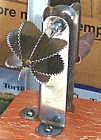

SAFARI
Users
- Types of Coconut
- Buying and Storing Coconuts
- Preparing Coconut
- Making Coconut Milk
- Coconut Products - Available commercial products
- Recipes
- Links - to information on Coconuts.
Types of Coconuts
Shown are the three forms whole coconuts are sold in: fresh (left, 5 inches diameter, 2-1/3 pounds, very full), brown (front, 4-3/4 inches diameter, 1-3/4 pounds, still quite full) and fresh young (right 5 inches diameter, 2-1/2 pounds).
Fresh Coconut
andBrown Coconut
are bought for the white flesh (called "copra") they contain. A fresh coconut still has a lot of water in it, palatable, but not as sweet as that of the fresh young coconut. The brown coconut will have less water and that water will be even less sweet, but still drinkable if there is a lot of it. The flesh of the brown coconut is harder and has a more intense flavor than that of the fresh coconut which is too soft and light in flavor for many recipes, and particularly for making coconut milk.Fresh Young Coconuts
are sold for the water they contain, which is sweeter and more flavorful than that of older coconuts. They are trimmed as shown and a lot of the weight is wet fiber. They should be sold tightly wrapped in plastic film to retain moisture. The shell is still too soft to stand the fiber being ripped off, and the flesh is thin and so soft you can eat it with a spoon. The flesh has much less flavor and sweetness than that of a mature coconut. They are often sold by street vendors with a hole punched into them for a straw. This water, usually with flakes of the pulp, is widely available in cans (see products below). A 2-1/2 pound coconut will yield about 1-1/2 cups of water and 4 ounces of flesh (used in some recipes along with the water).Mutant Gelatinous Coconut
[Macapuno, Kopyor] This coconut is available in the Philippines and Indonesia where it is used for various desserts. It may be found preserved in syrup in stores catering to Philippine communities. The flesh of this coconut does not harden but stays gelatinous.
Buying & Storing Coconuts
- IF you really depend on having a coconut for a recipe, buy a spare to make sure you have a good one - its cheap insurance and if you don't use it you can always eat it.
- Don't buy brown coconuts that don't still slosh when you shake them - the more water the better. A dry coconut is a moldy or rotten coconut.
- Fresh Coconuts can be so full of water they barely slosh at all. I have purchased some that were really a bit too young with meat that was still rather soft and lacked flavor. They should probably have enough air in them to slosh a bit.
- Don't buy a coconut (fresh or brown) that's bleeding at the eyes, it's rotten inside. The brown coconut in the photo above looked just fine in the store but proved to have just a little seep at one eye. It was rotten.
- Don't buy a coconut with a crack in the shell, it's probably moldy inside.
Fresh Coconuts will keep as long as 3 weeks but will start to turn brown and may crack. Keep them in a dry place or the fibers on the outside will mold. Brown Coconuts can also be kept a couple weeks if they still have plenty of water but not so long that they dry out.
Preparing Coconuts
 Preparing coconuts for use is simple but requires mechanical dexterity
and strength. If you don't feel up to it have someone accustomed to
sing tools do it (some husbands are good for this, but others will just
injure themselves).
Preparing coconuts for use is simple but requires mechanical dexterity
and strength. If you don't feel up to it have someone accustomed to
sing tools do it (some husbands are good for this, but others will just
injure themselves).
Yield:
A mature coconut should yield about 12 oz of copra (coconut meat) after shelling and peeling off the brown backing. This is equivalent to about 4 oz dried coconut. Dried grated coconut runs about 4 oz to one cup lightly packed so a whole coconut will be about 1 cup of dried grated coconut. So if an Indian recipe calls for "1/2 dried coconut grated", figure about 2 oz of dried grated coconut or 6 oz of fresh.A fresh coconut will also yield about 1-1/2 cups of coconut water which is used in only a few recipes, so it's for the cook. Pour it into a 2 cup glass measuring cup and chill it up in the freezer with a judicious dollop of chilled vodka poured in. It'll improve your disposition and nobody'll suspect a thing, "Its just coconut water".
Here are the steps for preparing a coconut, but for more detail and
pictures see our Coconut Milk
page.
- Use a 3/8 inch drill bit and drill through an eye (the weakest point - three eyes are found at the stem end), or better, two eyes. Pour out the water through the hole. Lacking a drill, use a hammer to pound a large phillips screwdriver or similar through an eye. The water must be clear and colorless - if it has any color at all your coconut is rotten. For a reasonably fresh coconut the water should be pleasant to drink.
- At this point, if it's convenient, you could put the coconut in a preheated oven at 350°F/177°C for 20 minutes. This will loosen the flesh from the shell making it much easier to remove, and will likely crack the coconut making it much easier to open.
- Place the coconut on a strong hard surface and wrap a towel around it to make it easy to hold in place. Careful how you hold it because a hammer blow may open a crack that springs shut and could pinch your skin - so use the towel. If you don't have a coconut grater you'll probably want to break it into several pieces.
- 
IF you have a real coconut grater, you can just grate the coconut
out of the shell (most recipes call for grated coconut anyway) and
you're ready to cook - but you probably don't have a real coconut
grater, hand cranked or otherwise, so you'll have to go through a few
more steps. I have it from an Indian lady that those hand cranked
graters are a real pain to use anyway.
- Now comes the hard part - prying the flesh out of the shell. By far the best and safest tool is a dull 1/2 inch wood chisel (bevel side to the shell) but a short strong knife like an oyster knife will do. In any case the objective is to not stab yourself in the process. Be careful.
- Once you have the flesh out, you will want to peel off the brown skin that came out with the flesh. You can use a "Y" Vegetable Peeler, or a large Microplane or similar.
- At this point the coconut flesh can be let dry a bit, then wrapped and stored in the refrigerator for about 3 days. Longer and it will get moldy. Of course you can freeze it for keeping longer. I often grate the coconut before freezing it.
- Most recipes call for grated coconut. Because the pieces break up easily a flat grater is as likely to produce bloody knuckles as grated coconut. For small quantities you can use a rotary grater with a flapper to push the coconut pieces against the drum, either an attachment for you mixer (preferred) or a hand rotary grater (like a cheese grater). You may have to clean the drum a couple of times because it clogs and you'll lose some coconut because when pieces get thin enough they slip around the drum. Best is to use an Indian Mixie, but a Mini-Prep food processor or the sharp blade in your regular food processor long enough will work, but take longer. My Mixie does half a coconut to a fine grind in 2-1/2 seconds.
- Depending on the recipe you may want to chop grated coconut to make it finer or grind it with a mortar and pestle (or if you used the sharp blade of your food processor just let it run until it's as fine as you can get it).
Fresh Young Coconut
These are nuts that are not yet mature. The flesh is jelly-like and lacks flavor, while the water, which fills the whole cavity, is very sweet. The photo to the left shows a whole nut from the tree, a similar nut cut in half, and a trimmed and bleached nut, the form normally found in markets.
Fresh young coconut will keep a week or so, but since the whole objective is the fresh juice inside, you want to minimize storage - the longer the storage the less juice. If kept moist the fiber on the outside will mold, and since the shell is very soft, mold could penetrate to the flesh and juice. If you keep it dry it'll dry out.
The water is a little less clear than from a mature coconut and it's
quite a bit sweeter. If you split the coconut open you can eat the
flesh with a spoon. It is thin, in some areas it may be so thin you can
see shell through it. The jelly like flesh is pleasant enough to eat but
it can't be used in any normal coconut recipe because the flavor is just
too light.
- Take a 3/8 inch drill bit and drill two holes, anywhere, or punch through with a hammer and phillips screwdriver (the shell is soft). Pour out the water and put it in the fridge to chill.
- The proper way to open a fresh young coconut is to set it on a stump and slash it cleanly through with a single stroke of a machete. My aim with a machete isn't that practiced, so I drive a sharp Chinese cleaver knife through it with a soft faced mallet.
- Scoop the flesh out with a spoon.
- See "fresh coconut" above for what to do with the water (you do keep a bottle of vodka chilled in the freezer, don't you) - or you can drink it chilled and straight up (the coconut water, not the vodka). Commercial young coconut water usually has little chips of the flesh in it.
Links
- C1 - The Truth About Saturated Fat - Mary Enig, PhD, Sally Fallon.
- C2 - Coconut Research Center - information including nutrition data for coconut products.
- C3 - Gernot Katzer's Spice Pages - Coconut - detailed botanical and other information on coconuts.